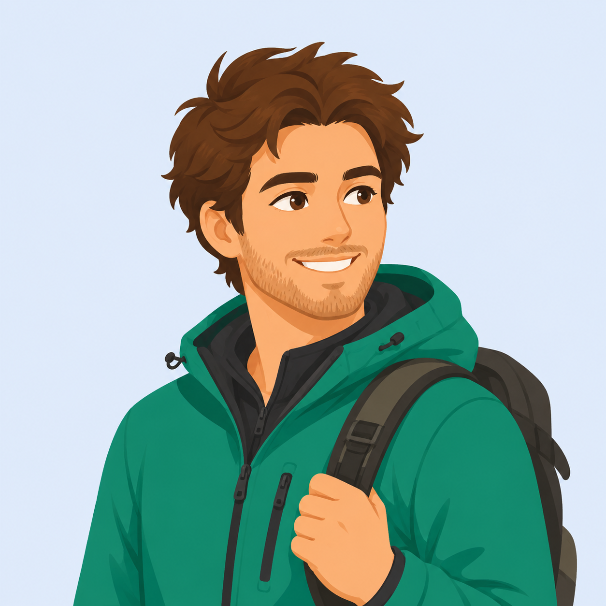
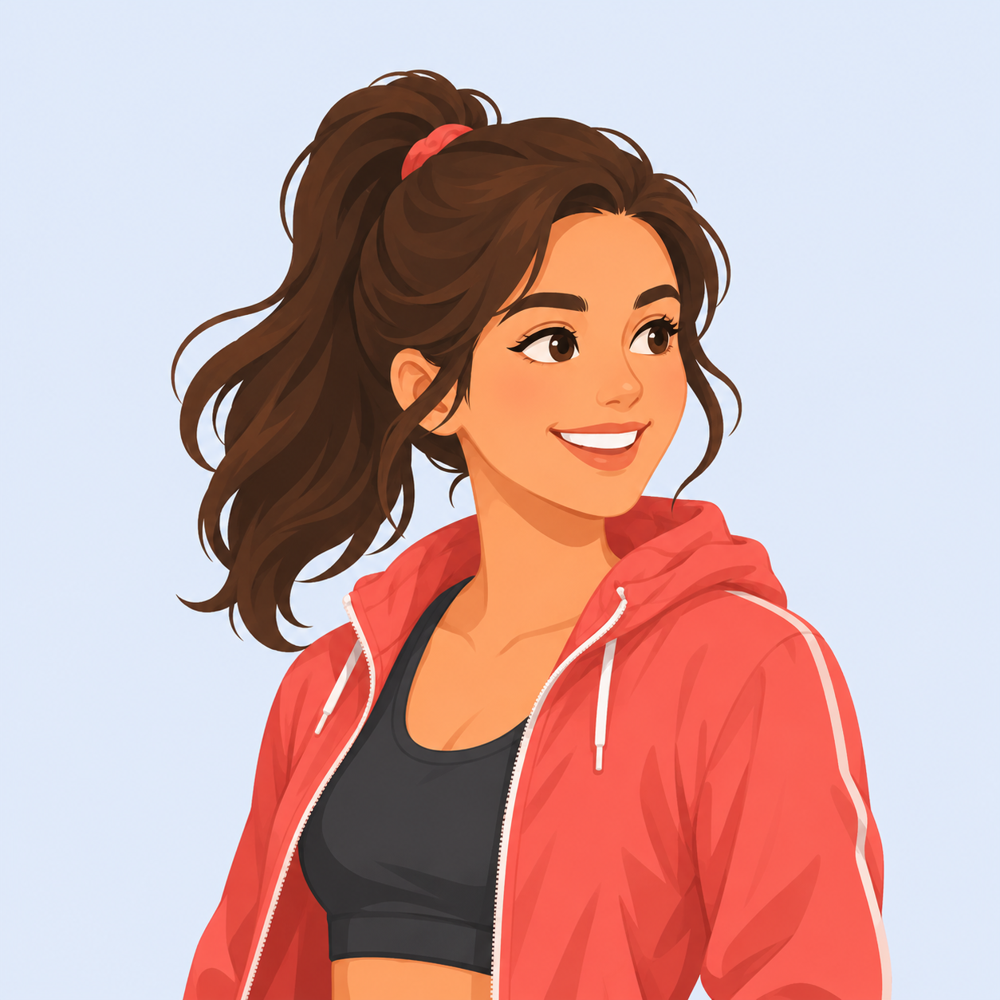

Пространство NDim Space
Моя самая сильная связь — вымышленный персонаж Алиса: Похожесть 80 %

ndimspace.app
ndimspace.app/ru — той, где карта и Макс, Алиса, Настя. Цель — Ваше слово: «наш лендинг доносит до людей ценность приложения NDim в решении болей и запросов».
У всех четырёх один состав: тихий вход «Войти» для своих · живое демо со звёздами и картой · поп-ап «Ваша самая сильная связь» и кнопка «Смотреть больше» с волнами · живые числа · три шага с экранами продукта · вопросы и ответы · финальный призыв.
Различаются варианты тем, что человек видит первым. Демо живое: поставьте звёзды, и проценты с картой пересчитаются формулой ядра.
Здесь Вы найдёте людей, действительно похожих на Вас. Забудьте о бесконечных свайпах — мы подберём тех, с кем у Вас настоящая совместимость.
Здесь Вы найдёте людей, действительно похожих на Вас. Забудьте о бесконечных свайпах — мы подберём тех, с кем у Вас настоящая совместимость.
Оцените пять фильмов и сериалов ↓Поставьте звёзды этим фильмам и сериалам, и Пространство NDim Space покажет, кто из Макса, Алисы и Насти думает так же, как и Вы.


Здесь Вы найдёте людей, действительно похожих на Вас. Забудьте о бесконечных свайпах — мы подберём тех, с кем у Вас настоящая совместимость.